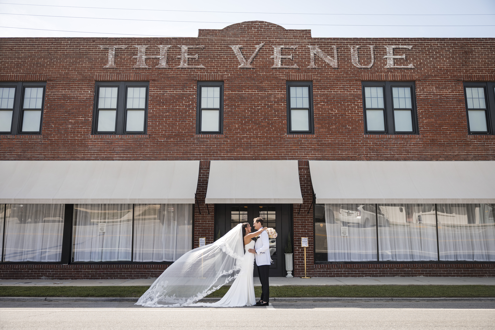
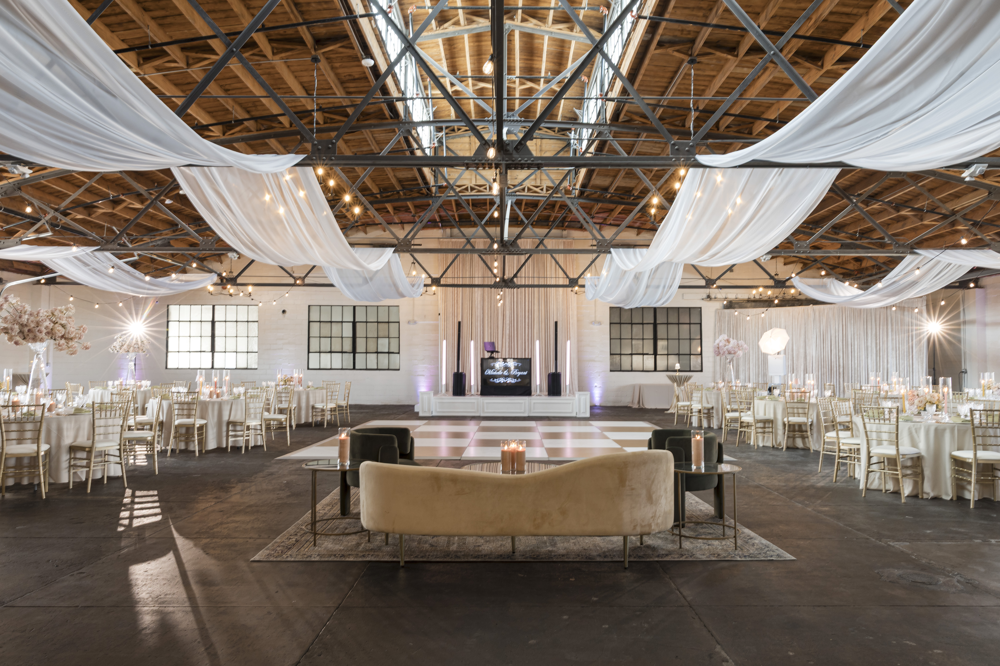
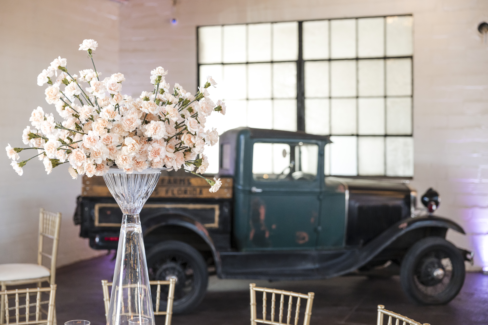
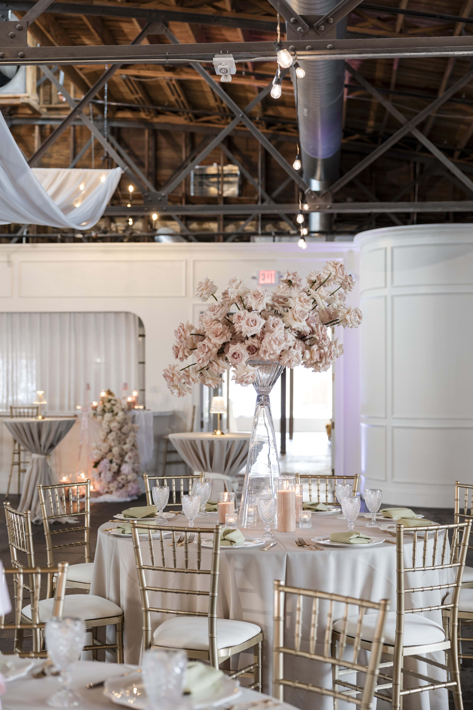
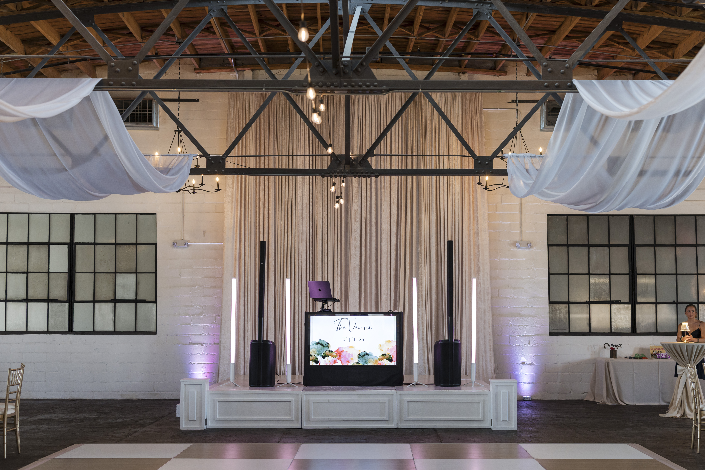
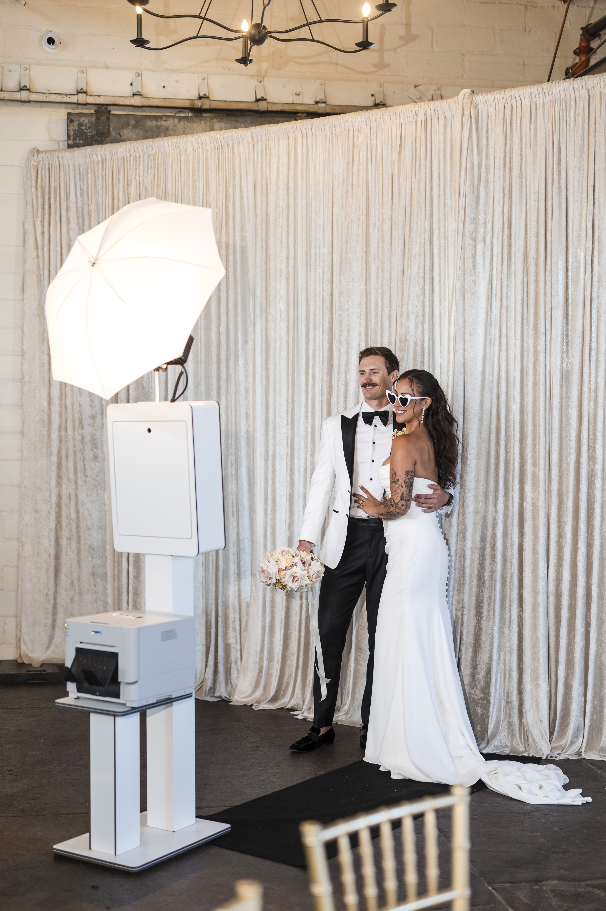
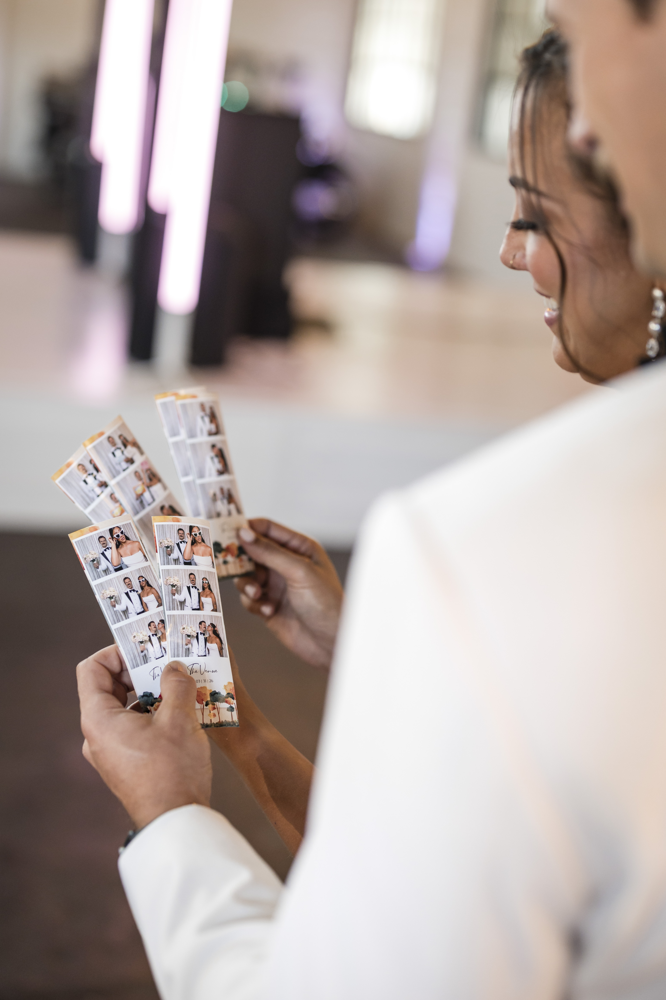
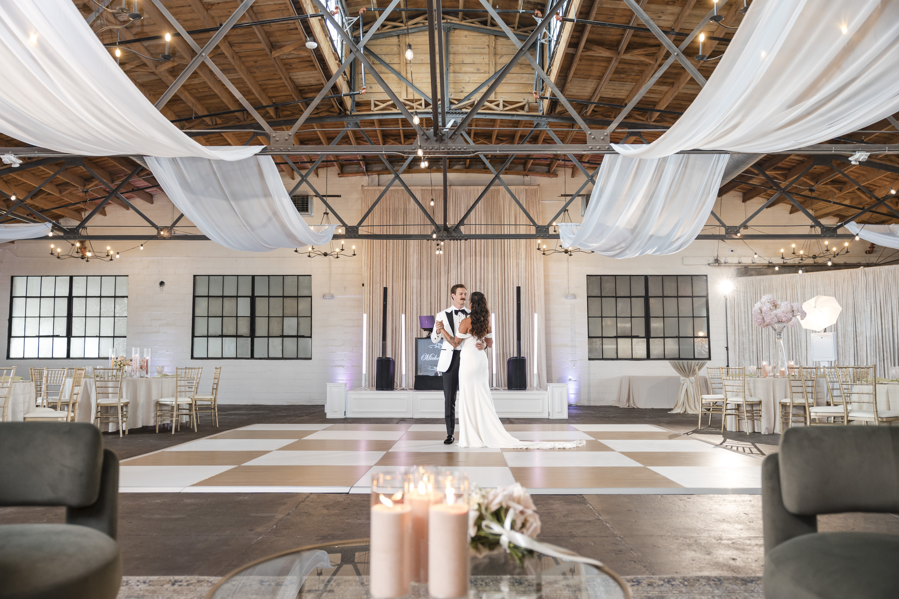
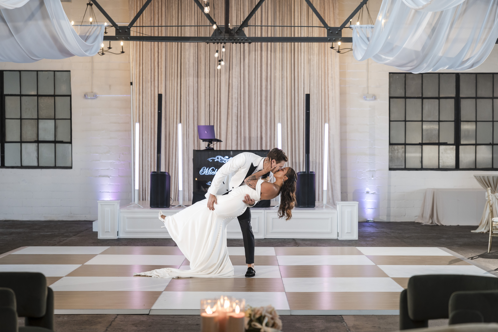
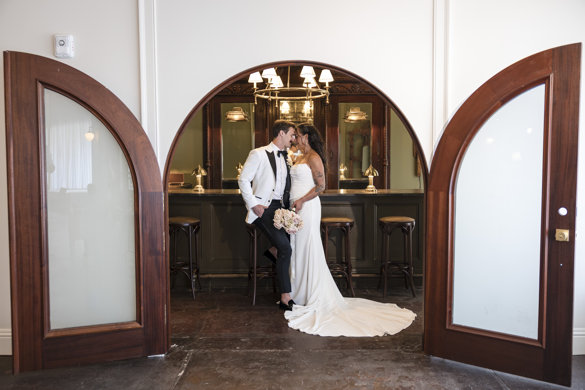

A beautifully restored 1920s landmark in downtown Hastings — historic bones, industrial-chic interiors, and room for up to 350 guests. Here's what to know before booking your wedding at The Venue.
The Venue Hastings is a restored historic event space in the heart of downtown Hastings, FL — the beautifully preserved Stanton Ford building, originally built in the early 20th century, now operating as one of the more distinctive wedding venues between Jacksonville and St. Augustine. Hastings sits in St. Johns County, roughly 35 minutes south of Jacksonville and 25 minutes west of St. Augustine Beach, making it an accessible alternative for couples who want a unique venue without the premium pricing of downtown St. Augustine or Ponte Vedra properties.
The building blends historic architecture with a modern industrial-loft aesthetic — exposed materials, high ceilings, and a flexible floor plan configurable for intimate ceremonies or large-scale receptions up to 350. Footloose Entertainment is on The Venue’s preferred vendor list and provides wedding entertainment there regularly.

The Venue Hastings offers exclusive use of the entire Stanton Ford building, which includes several distinct spaces:
| Space | Use | Capacity |
|---|---|---|
| Great Room | Primary ceremony and reception space | Up to 350 seated |
| Ford Parlor | Cocktail hour, smaller gatherings | Flexible |
| Welcoming Hall | Guest arrival, cocktail overflow | Flexible |
| Full Venue (standing) | Cocktail-style events | Up to 1,050 |
| Garden Suite | Bridal getting-ready suite | Wedding party |
| Private Lounge | Groom’s suite | Wedding party |
The rental includes exclusive access to all spaces, tables and Chiavari chairs, turnover service if doing ceremony and reception in the same space, an on-site venue manager, and a catering prep kitchen. The 10- and 12-hour rental blocks give couples flexibility on day-of timing without feeling rushed.


A typical Venue Hastings wedding uses the Great Room for both ceremony and reception — the venue manager and support staff handle the turnover between the two while guests are in the Ford Parlor or Welcoming Hall for cocktail hour. This is one of the smoother ceremony-to-reception flip configurations we work with: the entrances are well-defined, the sound boundaries are clear, and the timeline doesn’t require moving guests outdoors or to a separate building.
The Ford Parlor and Welcoming Hall are used for guest arrival and cocktail hour while the Great Room is set for the ceremony before the flip, or while it’s being reset after. Because The Venue provides their own on-site event coordinator, the DJ-to-venue communication on transitions is straightforward.

Footloose Entertainment is on The Venue Hastings’ preferred vendor list and has provided wedding entertainment there. We know the building’s load-in process, power access in the Great Room, and how the ceremony-to-reception flip timing works with their venue team.
Amplified music is permitted indoors, and the Great Room’s high ceilings and open floor plan carry sound well for both ceremony and reception. The primary setup consideration is speaker positioning for the ceremony flip — ensuring coverage reaches all seated guests, then repositioning for the reception dance floor. We handle this as part of standard pre-event coordination with The Venue’s manager.
What we confirm before every Venue Hastings event: Great Room ceremony vs. reception orientation, load-in timing and parking, speaker placement for ceremony coverage, flip timing with the venue team, and dance floor positioning for the reception.

A mirror booth or 360 video booth is a natural fit in the Welcoming Hall or Ford Parlor during the reception — the historic interior makes for great booth photos. Placement confirmed during pre-event coordination.


Footloose Entertainment’s DJ & MC packages start at $1,495, with final pricing shaped by guest count, hours of coverage, and any add-ons. See what’s included or request a quote for your date.



The Great Room seats up to 350 guests for a ceremony or reception. For standing cocktail-style events, the full venue holds up to 1,050.
The Venue is at 301 N Main St in downtown Hastings, FL 32145 — about 35 minutes south of Jacksonville and 25 minutes west of St. Augustine Beach, in the historic Stanton Ford building.
Yes — the venue handles ceremony and reception in the same Great Room space with a turnover flip during cocktail hour. Their on-site team manages the reset while guests are in the Ford Parlor and Welcoming Hall.
Footloose Entertainment is on the preferred vendor list. We know the load-in process, power access in the Great Room, and how the ceremony flip timing works with their venue staff.
Yes — the Garden Suite is the bridal getting-ready space and the Private Lounge is the groom's suite. Both are included in the venue rental.
Yes — the venue is wheelchair accessible. Confirm any specific requirements directly with The Venue when you tour.